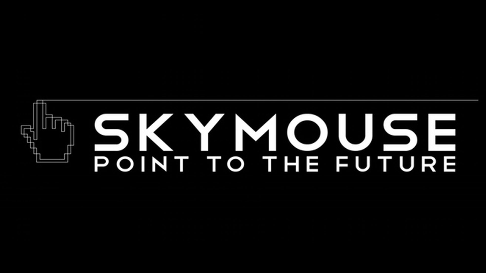
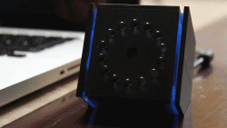
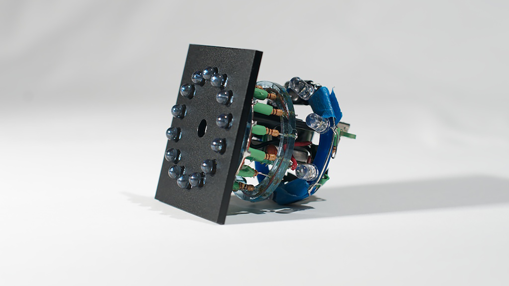

The idea behind Skymouse was simple: create a new way of interaction that allows for more intuitive control.
Part of my challenge was telling the brand through various touchpoints like graphics and promotional videos.


As my first involvement in a real design project, my main takeaway was understanding how to craft meaningful interaction - and to empower users through it.